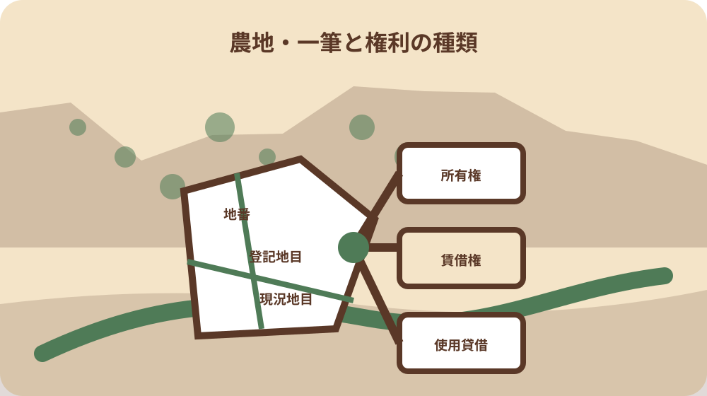
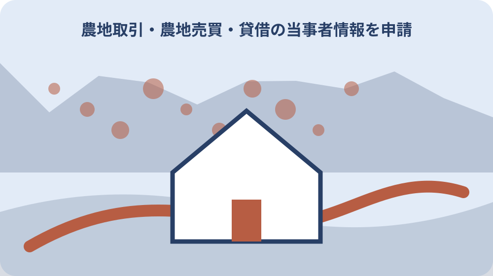

先に結論を確認する
この記事の答え：譲渡人と譲受人を別行にし、所有権・賃借権・使用貸借など希望する権利種別を明記します。土地は一筆ごとに所在・地番、登記と現況の地目、面積を並べ、登記名義と現所有者の差、既存の使用収益権と権利者まで結びます。対価・賃料・期間は契約欄へ分け、未確認事項は確認先と期限を残します。
森町で最初に照合する条件：譲渡人と譲受人を別行にし、氏名・住所・連絡担当・本人確認済み資料を役割別に記録する。
当事者情報票は契約前の食い違いを見つける道具
森町の農地を耕作目的で売る、買う、貸す、借りる話が出たとき、最初から申請書へ直接書くと、誰が譲渡人か、どの権利を設定するか、対象地番が一致しているかという未確認事項が埋もれます。この記事では正式申請の前段に、一枚の当事者情報票を作り、人物・権利・土地・契約の四群を対応させます。 具体的には、譲渡人・譲受人、権利種別、一筆ごとの地番・地目・面積、名義差、既存権利を同じ案件番号で結びます。
森町は農地法第3条の許可要件、提出書類一覧、申請書、別添、法人用の状況書を個別に公開しています。当事者情報票はこれらの代わりではありません。家族や相手方から集めた情報を町の現行様式へ移す前に、食い違いと空欄を見えるようにする準備表です。
農林水産省は、農地の売買・貸借では譲受人と譲渡人が原則として農業委員会へ申請し、許可を受ける必要があると説明しています。森町も必要な許可等を受けない所有権移転や貸借権設定等は無効と案内しています。口頭合意や代金相談だけで効力が生じたと扱いません。
完成形は、一行目に案件番号と相談日、人物欄に双方、土地欄に一筆ごとの情報、権利欄に希望する種類、契約欄に対価・期間、進行欄に町への確認結果を置きます。分からない項目は空欄ではなく『未確認・確認先・期限』とし、推測した値を事実のように移しません。
譲渡人と譲受人を別行で確定する
農林水産省の申請様式例は、当事者を譲渡人と譲受人に分け、氏名、年齢、職業、住所の欄を設けています。家族間では『地主』『借りる人』と呼びがちですが、情報票には今回どちらの役割で申請を考える人かを正式氏名と並べます。
住所は連絡先メモから転記せず、本人が確認した現行表記を使います。同姓の家族、共有者、法人の担当者がいる場合、話を進めている人と権利を持つ人を同一視しません。連絡担当欄と当事者欄を分け、代理や委任が関係する場合は必要資料を町へ確認します。
複数の譲渡人、複数の譲受人が想定されるなら一人一行にします。代表者一人の名前で家族全員の意思を済ませず、それぞれの役割、連絡先、確認状況を記します。署名や押印の要否、本人確認、委任の扱いは現行様式と事務局の案内へ戻ります。
当事者名の横には情報を確認した資料名と日付を添えます。古い固定資産資料、登記事項証明書、家族の住所録が違う場合は一つへ勝手に統合せず、相違表へ移します。違いを先に示せれば、申請直前に本人名や住所を修正する混乱を減らせます。
所有権・賃借権・使用貸借を選び分ける
農林水産省の様式例は、所有権、賃借権、使用貸借による権利、その他の使用収益権を分けています。家族会話の『貸す』だけでは、有償の賃借か無償の使用貸借か分かりません。情報票には希望する権利の種類と、その理解を双方へ確認した日を書きます。
所有権移転を考える案件で、代金を後から決める状態と、贈与のつもりという状態を同じ『売買』へ入れません。税や登記の扱いをこの記事だけで判断せず、必要に応じて税務・登記の専門窓口へ確認します。情報票は農地法上の相談事項を整理する範囲に留めます。
賃借権なら賃料と期間、使用貸借なら無償で使う合意と期間を契約欄へ結びます。名称だけ選んで条件が空のままでは、双方が想定する返還時期や管理負担が違う可能性があります。農作物、農機具、水利、草刈りなど土地外の条件は別の合意欄にします。
どの制度経路を使えるかは、当事者が先に決定するものではありません。森町公式ページには農地法第3条と農地バンク等の案内があるため、目的、当事者、土地を伝えて事務局へ確認します。相談前は『希望する権利』、案内後は『確認した手続』と欄を分けます。
一筆ごとに地番と二つの地目を並べる
国の様式例は、許可を受けようとする土地について所在・地番、登記簿の地目、現況の地目、面積を記す欄を設けています。住所や通称だけで農地を特定せず、一筆ごとに一行を作ります。隣接する田畑でも地番が違えば別行です。
登記地目と現況地目は二列にします。登記が田でも現地の見え方が畑に近いなど、相違があるときに自分で一方を正しい値へ修正しません。資料に書かれた事実と現地で観察した状態を分け、どの確認が必要か事務局へ相談します。
面積は単位を付け、登記事項証明書からの値か、家族メモの概数かを明記します。畝や反と平方メートルを暗算で置換すると転記差が生じるため、正式様式へは根拠資料の単位と数値を確認して移します。複数筆の合計だけで個別面積を埋めません。
位置確認用には地図、現況確認用には撮影日付き写真を補助資料にできますが、地図上の区画線や畦の見た目を法的境界と断定しません。情報票には地番、資料名、取得日、写真番号を対応させ、境界確認が必要な事項を別課題として残します。

登記名義と現所有者の差を空欄にしない
農林水産省の様式例には、所有者の氏名・名称に加え、登記簿と異なる場合の現所有者名を書く欄があります。この差は、相続や未登記の事情を家族が知っているだけでは解消しません。登記資料の名義と、現在権利を持つと説明されている人を別列にします。
名義人が亡くなっている、旧住所のまま、共有者がいるなどの事情は、一文で『相続済み』と片付けません。いつ誰が何を根拠に現所有者と説明したかを記し、戸籍・遺産分割・登記など必要資料の確認先を分けます。個別の申請可否は事務局へ資料を示して相談します。
固定資産税の通知先、耕作している人、登記名義人が同じとは限りません。税を払っていることだけで譲渡権限を判断せず、日常管理者だけを所有者欄へ入れません。三者が違う場合は相関図を作り、今回の当事者になり得る人を町へ確認します。
相違が見つかったら契約条件の交渉を急ぐ前に、誰が申請当事者となり、何を添付するかを整理します。当事者情報票へ赤字で警告するのではなく、『確認資料』『確認窓口』『回答日』の列を追加します。未解決の差を隠さないことが、相手方への説明にも役立ちます。
既存の使用収益権を権利者まで記す
国の様式例は、所有権以外の使用収益権が設定されている場合、その種類、内容、権利者の氏名・名称を記す欄を設けています。所有者と買い手だけの表では、現在借りて耕作する人や既存契約が抜けます。土地行ごとに既存権利欄を作ります。
家族が『昔から近所に貸している』『無償で使ってもらっている』と話す場合、契約書がないことを権利なしと結論づけません。開始時期、相手、賃料の有無、更新のやり取り、返還の話を聞き取り、伝聞であることを明記して事務局へ相談します。
現地で別の人が耕作しているように見えても、耕作者イコール権利者とは断定しません。作業受託、家族の手伝い、利用権など関係が異なる可能性があります。本人への確認を飛ばして写真や近隣談だけで権利欄を埋めないようにします。
既存権利が分かったら、新たに設定したい権利との関係を質問票にします。解約、期間満了、同意などの要否は案件ごとに確認が必要です。相手へ一方的に終了を告げる前に、契約資料と現状を持って事務局や必要な専門家へ相談します。
対価・賃料・期間を契約欄へ移す
農林水産省の様式例は、土地ごとに対価または賃料の額と10アール当たりの額を記す欄を設け、別項目で契約内容を求めています。総額だけを人物欄の横へ書くと、複数筆の内訳が分かりません。一筆ごとの額と案件全体の条件を分けます。
売買では対価、賃貸では賃料、使用貸借では無償であることを明確にします。支払時期、引渡し時期、期間、更新、返還時の扱いは契約欄へ置きます。ただし当事者情報票は契約書ではなく、双方の認識を照合して正式文書へつなぐ下書きです。
農地の面積当たり額を計算する場合、元の面積と単位、端数処理を残します。家族内の概算を申請様式の確定値へ転用せず、相手方と確認した数値、証拠資料、確認日を一緒に記します。税や手数料を賃料へ混ぜないよう、別費目にします。
条件が未定なら『後日相談』ではなく、誰がいつまでに案を出すかを書きます。口頭で変更した内容は変更前を消さず、日付と合意者を添えます。許可前に履行してよいと誤解しないよう、契約合意、申請、許可確認、引渡しを別の進行欄にします。
個人用と法人用の書類束を分ける
森町公式ページは通常の第3条申請書と別添に加え、農地所有適格法人の事業等の状況を記す書類を別に掲載しています。譲受人が法人なら、個人用の人物欄だけで準備を終えません。法人名、所在地、代表者、連絡担当を分け、町の現行書類一覧を確認します。
法人の担当者が交渉していても、担当者個人を譲受人として書きません。法人そのものと、書類を作成・連絡する人の役割を別行にします。法人番号、定款、構成員など何が必要かは掲載書式と事務局の案内に従い、古い提出例を流用しません。
個人から法人へ途中で候補が変わった場合、氏名だけ置換せず案件を分けます。権利取得要件や添付書類が変わる可能性があるため、変更日と理由を残し、改めて事前相談します。旧候補の個人情報は必要範囲を定め、無制限に新関係者へ共有しません。
書類束の表紙には『個人』『法人』『共通土地資料』の区分を付けます。登記事項証明書など共通に見える資料も、どの申請案で使うか索引を付けます。電子ファイルはアクセス権を限定し、本人確認書類や連絡先が相手方へ自動共有されない保管先を選びます。
森町の提出書類一覧と照合する
当事者情報票が埋まったら、森町公式の第3条提出書類一覧、許可要件、申請書、別添を同じ取得日で開きます。情報票の各欄から現行様式の該当欄へ矢印を付け、必要な添付資料を一覧化します。古いダウンロードだけで準備しません。
国の様式例は対象土地に登記事項証明書を添付するよう示しています。森町で求める発行時期、原本・写し、部数などは現行提出一覧と事務局へ確認します。地番が複数ある場合、証明書と情報票の行番号を対応させ、添付漏れを見つけます。
許可要件を満たすかはチェック欄に丸を付けただけで決まりません。譲受人の耕作体制、周辺農地への影響など、別添で求められる事実を資料で示します。分からない項目は都合のよい表現へ変えず、現況と質問を具体的に伝えます。
提出直前に様式の更新がないか再確認し、ファイル名、ページ更新日、取得日を記録します。記入例と空欄様式を混ぜず、提出版には案件番号と版番号を付けます。町へ事前確認した内容があれば、回答日と該当項目を索引へ残します。
開催日程の詳細は12か月専用カレンダーへ分ける
森町の令和8年度予定表は、議案締切、議案発送、現地調査、農業委員会を別列で示しています。12か月の実日付、予定と実績、PDFの取得日と変更履歴は、専用記事「森町の令和8年度農業委員会カレンダー」で管理します。当事者情報票には日付を再転記せず、参照した専用カレンダーの版日と対象月を残します。
当事者情報票の日程欄には、初回相談日、申請種類を確認した日、専用カレンダーで選んだ対象月、実際の受付確認日だけを置きます。議案発送日や現地調査日の共通予定は複写せず、対象農地の地番、譲渡人、譲受人、権利種類、提出版という本票の主題を優先します。
専用カレンダーの日程が更新されても、当事者情報票の古い日付を無記録で上書きしません。参照版、変更確認日、影響した案件番号を追記し、受付の可否は森町農業委員会へ確認します。契約日や引渡日を、未確認の総会日だけで固定しません。

大石の視点：農地の合意と許可を別に残す
ここまでのうち、森町が無許可の所有権移転等は無効と案内し、農林水産省が原則として申請と許可が必要と説明していることは、各公式資料で確認できる事実です。ここからは私、大石浩之が実家や農地の相談資料を整える際の提案であり、森町や農業委員会の公式見解ではありません。
公式資料が示すのは、当事者が原則として農業委員会へ申請し、許可を受ける必要があることです。家族内の了承、相手方との条件合意、申請書の提出、審議、許可確認はそれぞれ別の時点です。提出しただけで許可済みとは扱わず、結果は通知等で確認します。
私は当事者情報票の進行欄を、家族確認、相手方確認、事前相談、申請、補正、許可確認、引渡しの七行に分けます。誰がいつ確認したかを各行へ書けば、口頭合意を許可と取り違えにくくなります。連絡役と権利を持つ本人も別欄にし、家族の一人だけで全員の意思を代表したとは記しません。
利用開始を急ぐ案件ほど、私は希望日より先に未確認事項を数えます。名義差、共有者、既存権利、権利種別のどれかが未確認なら、作付けや引渡しを先行させず事務局へ相談します。耕作目的から資材置場や建築などへ目的が変わった場合も同じ表で押し切らず、別の手続として確認し直します。
提出版と修正版を一筆単位で引き継ぐ
提出後に補正があった場合、元ファイルへ直接上書きせず、版番号と修正日を付けます。どの地番の何を変え、誰の資料で確認したかを変更履歴にします。人物情報の修正と土地情報の修正を同じ『訂正』へまとめず、影響する申請欄を示します。
紙の束は、表紙、当事者情報票、土地一覧、契約条件、提出書類索引、提出版控え、補正履歴、結果確認の順にします。電子版も同じ番号を使い、地番をファイル名へ含める際は個人情報の取扱いに注意します。クラウド共有は関係者ごとに閲覧範囲を分けます。
家族へ引き継ぐときは、合意済み事項、未確認事項、町へ提出した事項、結果が出た事項を色ではなく文字で区別します。色覚や白黒印刷でも分かるよう、状態名と日付を付けます。口頭説明だけで終えず、次に誰がどの窓口へ何を確認するかを書きます。
完成した当事者情報票には、譲渡人・譲受人、権利の種類、一筆ごとの地番・地目・面積、名義差、既存権利、対価・賃料、契約条件、提出資料、日程、結果確認がつながります。表の目的は申請を自動化することではなく、当事者と土地の不一致を早期に示し、森町の現行手続へ正確に渡すことです。相談時には、この一枚を読み上げ、双方が同じ地番と権利の話をしているか最後に確かめます。